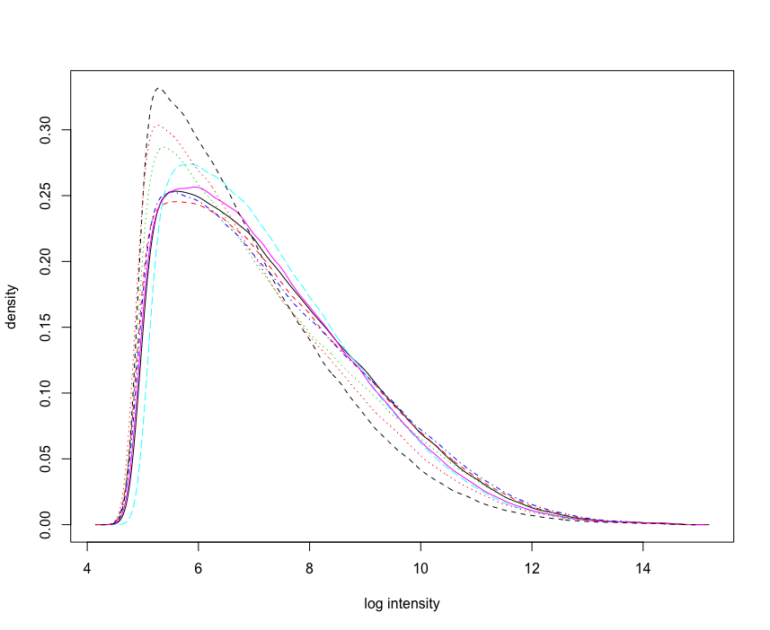
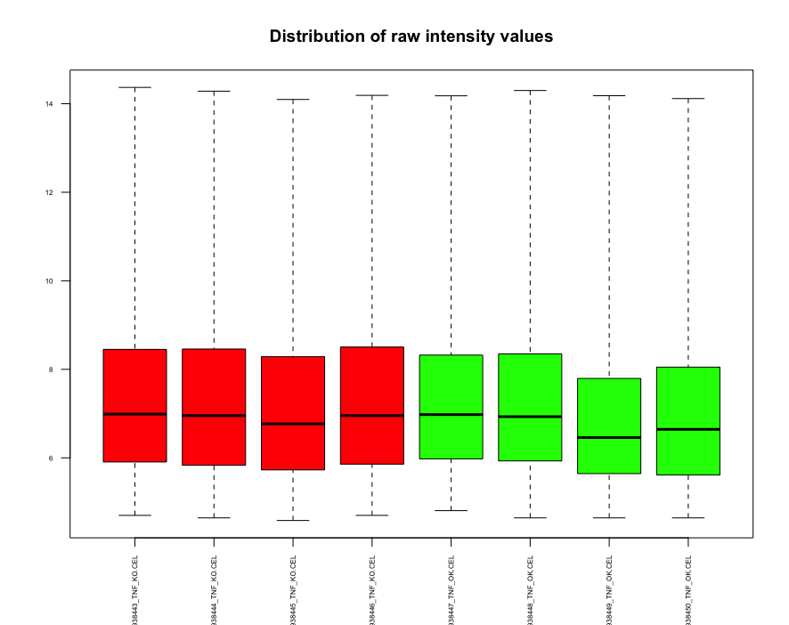
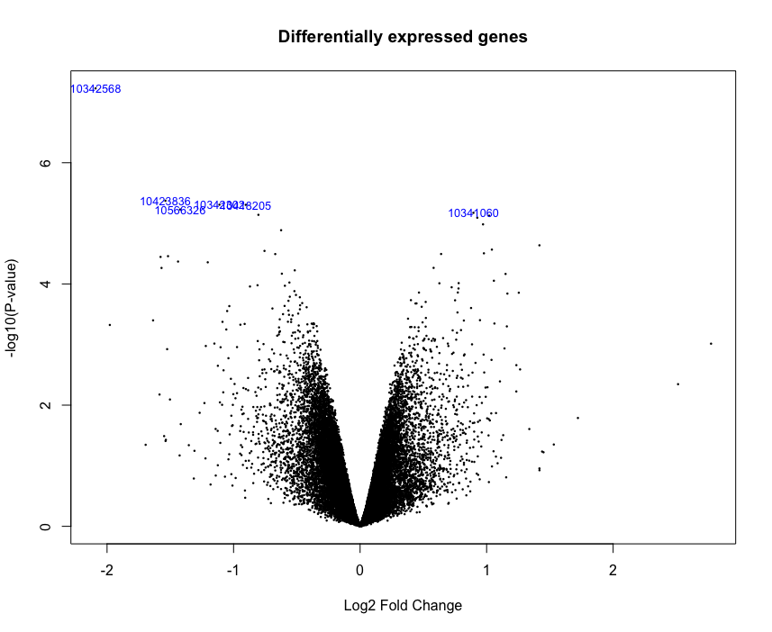
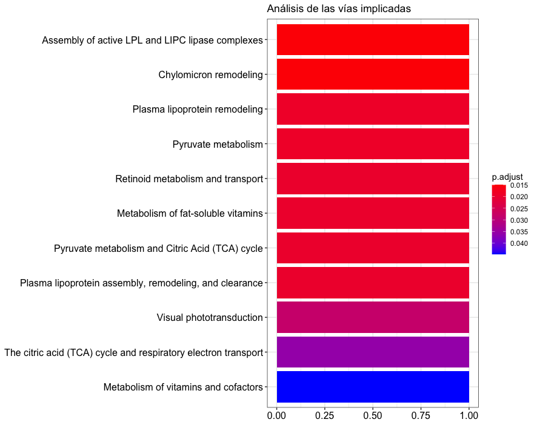

Iago Lastra Rodríguez - Abril 2020
Análisis de Datos Ómicos PEC_1AbstractObjetivosMateriales y MétodosProcedimiento de trabajoResultadosDiscusiónConclusiónApéndice
Aunque los inhibidores de factores de necrosis tumoralTNF son utilizados en el tratamiento de enfermedades inflamatorias crónicas no existe demasiada información acerca de cómo pueden afectar estos tratamientos al funcionamiento normal del sistema nervioso central.
En este trabajo se analizarán Microarrays de ARN para buscar diferencias estadísticamente significativas entre muestras sin tratar (WT) y muestras sometidas a tratamientos de inhibición de TNF.
Este trabajo se basa en estúdio de comparación de grupos (class comparison) donde se han tomado muestras correspondientes al dia 13.5 de la fase embrionaria (E13.5) al séptimo día de vida (P7) y en adultos de 2 y 4 meses de vida (A2 y A4 respectivamente) de un grupo de control (WT) de ratones C57BL/6 y un segundo grupo de ratones tratados (TNF-/-).
Los microarrays utilizados son del modelo GeneChip Mouse Gene 1.0 ST Array de Affymetrix que según su especificación contienen aproximadamente 25 sondas (probes) diseñadas para cubrir 28,853 genes bien conocidos y anotados.
En un primer paso se analizaron gráficamente los archivos .CEL buscando posibles errores en los datos. Aunque tanto el histograma como el boxplot mostraron datos bastante uniformes se realizó una comprobación adicional utilizando el paquete arrayQualityMetrics para verificar que los datos no contenían errores.


A continuación se normalizaron los datos utilizando el algorimo RMA y se repitió el control de calidad sobre los mismos.
Para no perder información no se filtraron datos y se optó por analizar todos los genes mediante el método limma para obtener aquellos con una mayor diferencia de expresión entre ambos grupos.

Todos estos genes se ordenaron en función de su p-valor ajustado para realizar un análisis biológico de aquellos con una expresión diferencial mayor:
| ID | SYMBOL | Adj P.Val |
|---|---|---|
| 10423836 | Cthrc1 | 0.0311910 |
| 10418205 | Plac9b | 0.0311910 |
| 10566326 | Trim12a | 0.0311910 |
| 10471675 | Glo1 | 0.0311910 |
| 10398432 | Mir377 | 0.0311910 |
| 10572130 | Lpl | 0.0361161 |
| 10412394 | Nnt | 0.0410250 |
| 10352110 | Catspere2 | 0.0655403 |
| 10449644 | Glo1 | 0.0655403 |
| 10441952 | Ermard | 0.0655403 |
| 10418210 | Tmem254b | 0.0655403 |
| 10608454 | Gm29024 | 0.0823492 |
| 10412665 | Rpl21 | 0.0864309 |
| 10423821 | Baalc | 0.0914298 |
| 10450501 | Tnf | 0.0914298 |
| 10590433 | 1700048O20Rik | 0.1130362 |
| 10567297 | Itpripl2 | 0.1130362 |
| 10421810 | Rgcc | 0.1130362 |
| 10351781 | Kcnj10 | 0.1130362 |
| 10442580 | Rps2 | 0.1160296 |
| 10428209 | Gm10384 | 0.1160296 |
| 10441933 | Ermard | 0.1160296 |
| 10389795 | Stxbp4 | 0.1244142 |
| 10442331 | Pkmyt1 | 0.1341670 |
| 10492291 | Gm9696 | 0.1341670 |
| 10430574 | Fam227a | 0.1435126 |
| 10424060 | A930017M01Rik | 0.1435126 |
| 10376326 | Igtp | 0.1435126 |
| 10424062 | A930017M01Rik | 0.1460289 |
| 10474490 | Olfr1283 | 0.1460289 |
| 10368748 | Amd1 | 0.1460289 |
| 10369932 | Susd2 | 0.1460289 |
Con esto se ha podido realizar un análisis enrich dando como resultado las siguientes vías:

Estudio: https://www.ncbi.nlm.nih.gov/geo/query/acc.cgi?acc=GSE134178
ID_DATA: GSE134178
BioProject: https://www.ncbi.nlm.nih.gov/bioproject/PRJNA554146
Visualizar datos enrichment:
https://yulab-smu.github.io/clusterProfiler-book/chapter12.html